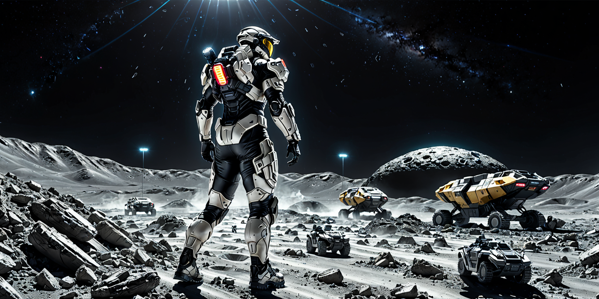

Space Program Kids(スペースプログラムキッズ）
命令コマンドを並べてロボットを動かし、ゴールへ向かわせてください。
順次処理 → 繰り返し処理を学ぶミッションクリア型のプログラミング学習ゲームです。
ミッションは、今後どんどん追加していきます。
プレイ

命令コマンドを並べてロボットを動かし、ゴールへ向かわせてください。
順次処理 → 繰り返し処理を学ぶミッションクリア型のプログラミング学習ゲームです。
ミッションは、今後どんどん追加していきます。
プレイ